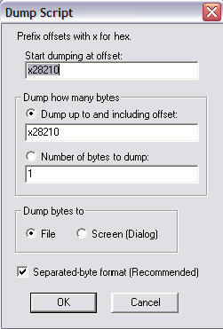
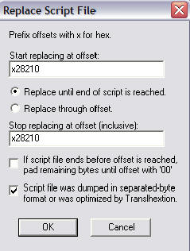

Por DaRKWiZaRDX
¡ASEGÚRATE SIEMPRE DE TENER VARIAS COPIAS DE SEGURIDAD DE LAS ROMS QUE MODIFICAS!
Igual que en la sección anterior, seguramente te preguntarás qué es un script... Un script es un archivo de texto donde se ha "dumpeado" (extraído) texto del juego para poder editarlo de forma más cómoda con cualquier editor que se tenga a mano. El programa extractor del script traduce cada byte usando la tabla y lo exporta a un fichero (normalmente *.txt) para que el traductor pueda modificarlo a su antojo y luego reinsertarlo, recalcular punteros (eso lo veremos dentro de poco) y que el texto quede como nuevo en el juego.
Pues el traducir cuenta con más ventajas que desventajas sobre traducir usando editor hex:
+ Los scripts pueden ser editados de forma mucho más cómoda, ya que si se nos
olvida un caracter podemos volver a ponerlo fácilmente, en editor hex quizás
tengamos que mover todo un bloque.
+ El texto queda mucho mejor, ya que al reinsertar scripts y recalcular punteros
se aprovecha el espacio que sobró de una traducción corta y se puede usar para
una traducción más larga.
+ Podemos usar buscar y reemplazar en casi todos los editores para arreglar
algún error ortográfico que notemos cuando ya traducimos.
Hay muchas más, pero estas son las más importantes.
Aunque también tenemos algunas (en mi opinión pocas y sin importancia) desventajas al traducir con scripts:
- Quizás al no saber bien en qué contexto se habla podamos confundir
pronombres y/o frases (P.Ej: No sabiendo si "it" se trata de un objeto masculino
o femenino; o no saber si "you" habla de singular o plural, etc.)
- Cuando hay nombres de personajes variables en el script hay posibilidades de
que recalcules mal los punteros y salga mal el texto, aunque puede ser
arreglado.
Realmente, aunque de a ratos pueda traerte dolores de cabeza, recomiendo traducir mediante scripts antes que con editor hex, la decisión es tuya :)
Para extraer un script necesitamos lo siguiente:
- La tabla en la que estén todos (o la mayoría) de los caracteres que hay en el
bloque de texto.
- La ROM (obviamente).
- Un programa para extraer scripts, puedes usar Script Extractor/Inserter,
RomJuice u otros, aquí usaré Translhextion.
1. Abre el Translhextion con la ROM y la tabla.
2. Sitúate al final del bloque de texto y anota su offset (si prefieres usa un
bookmark).
3. Sitúate al inicio del bloque de texto.
4. Ve al menú Script -> Dump Script. Te aparecerá una caja así:

* En la primera caja debes introducir el offset del inicio del bloque, pero como
ya tenemos el cursor situado al inicio del bloque de texto el programa lo pone
por sí solo.
* En la segunda caja debemos poner el offset del fin del bloque de texto, o
podemos seleccionar el segundo botón redondo (el que está debajo de la segunda
caja) y especificarle la cantidad de bytes a dumpear (extraer).
* Donde aparecen dos botones redondos es para elegir dónde debe dumpearse el
texto, si es "File" lo extraerá todo a un fichero común de texto, si marcamos "Screen
(Dialog)" lo extraerá a una ventana desde la que podremos editarlo y se
reinsertará automáticamente cuando terminemos.
* El último checkbox que aparece conviene marcarlo solo si nuestro script tiene
poco o nada de DTE/MTE, ya que sino quedará en un formato muy complicado de
editar (mira al final para ver mejor el efecto de esta casilla).
Una vez le demos todos los parámetros y estén correctos tendremos un fichero (o un diálogo) con todo nuestro texto dumpeado, de ahí podemos editarlo y volver a insertarlo.
Para reinsertar un script debemos situar el cursor al principio del bloque a
reemplazar e ir al menú Script -> Replace Script, y aparecerá un diálogo como
éste:

* En la primer caja debemos poner el offset del inicio del bloque a reemplazar,
pero como ya está ubicado el cursor no deberemos cambiarlo.
* Si marcamos el segundo botón redondo podemos indicarle a qué offset debe dejar
de reemplazar texto, aunque generalmente no es necesario.
* Si activamos el primer checkbox podremos indicarle que si el script acaba
antes del offset que pusimos como final se llenará el espacio vacío con $00's.
Si el después del bloque ves varios $00's no habrá problema si marcas esta
opción, la verdad, no debería hacer diferencia en la traducción.
* El segundo checkbox hay que marcarlo si el script fue dumpeado en formato
Separated-Byte (eso que recomendé no usar si el script tiene DTE/MTE) o si fue
optimizado por Translhextion (mira más adelante para más detalles en
optimización).
Pulsa OK con todos los parámetros e insertará el script modificado, aconsejo que mires el último bloque original de texto para asegurarte de que tu script modificado no ocupa más que el original, si eso ocurre recomiendo que cierres el Translhextion (no guardes los cambios, ya que pueden ocasionar problemas con el juego) y acortes un poco tu scripts para que entre.
Seguramente ya te habrás dado cuenta de esto, hemos modificado el texto del juego, cambiado de lugar códigos de fin de bloque y entonces seguramente tendremos miles de punteros que apuntan hacia donde no deberían, lo que debemos hacer entonces es recalcular punteros, podemos hacerlo mediante el método explicado en la sección de punteros, uno por uno, o podemos usar un programa diseñado para ello, que recalcula todos los punteros y sobre-escribe la tabla de punteros según dónde inicie cada bloque en nuestro script, el programa es el recalc (recomiendo más aún la versión de Vegetal, VRecalc).
El programa debe usarse desde línea de comando, o puedes hacerte un batch o acceso directo con los parámetros para facilitarte las cosas. Los parámetros para el recalc son (los offsets van en hexadecimal):
> recalc [rom] [offset inicio bloque] [offset final bloque] [offset inicio tabla de punteros] [código de fin de bloque] <puntero default>
Los parámetros para el VRecalc son algo diferentes (los offsets también van en hex):
> Vrecalc [rom] [offset inicio bloque] [offset inicio tabla de punteros] [offset fin tabla de punteros] [tamaño de punteros] [código de fin de bloque]
Creo que se entiende bastante bien qué es cada cosa, pero bueno, por las dudas las explicaré:
[rom] -> Bastante obvio, el nombre de la ROM donde hay que recalcular los
punteros.
[offset inicio bloque] -> El offset de la primera letra del bloque de texto
cuyos punteros quieres recalcular.
[offset final bloque] -> El offset del último byte del bloque de texto cuyos
punteros hay que recalcular.
[offset inicio tabla de punteros] -> El offset del puntero del primer
diálogo del bloque modificado.
[offset fin tabla de punteros] -> El último puntero de la tabla, lo usa solo el
VRecalc.
[tamaño de punteros] -> El tamaño de los punteros (normalmente 2, pero puede
cambiar). Solo lo usa el VRecalc.
[código de fin de bloque] -> Byte que indica fin de bloque.
<puntero default> -> No es obligatorio. Úsalo si quieres que recalcule de un
puntero en adelante.
Eso es todo, ejecuta el programa y recalculará los punteros, si todo ha ido bien el texto aparecerá correctamente en el juego, sino fíjate bien porque algún error has cometido (a mí me pasó algo así en FF1 cuando salteé un código de fin de bloque y me aparecían casi todos diálogos equivocados =\ ). Toma un poco de tiempo dominar los punteros, pero una vez que aprendes a utilizarlos se volverán una herramienta casi fundamental para la traducción.
Si el juego utiliza DTE/MTE no te preocupes, ya que igualmente podrás usar scripts y hacer que usen la tabla DTE/MTE para comprimir su contenido lo más que puedan, la diferencia está que al dumpear el script dejes desmarcada la casilla "Separated-byte format" del Translhextion, ya que esto hace que los códigos DTE/MTE aparezcan entre llaves.
Por ejemplo: Así es como queda un fragmento del primer bloque de texto del Final Fantasy VI con "Separated-Byte format".
"VICKS: T{he}{re}{'s}{ t}{he}{ t}{ow}n{...}{16}{18}{12}{13}WEDGE: H{ar}{d }{to}{ b}{el}ie{ve}{ a}{n }Es{pe}r'{s }{be}{en} { f}{ou}{nd}{ i}{nt}{ac}{t }{th}{er}e, 1000 ye{ar}{s }af{te}{r }{th}{e }Wa{r }{of}{ t}{he} M{ag}i{...}{16}{18}{12}{00}". (89 bytes)
-El texto que resalté con verde (como ya
habrás notado) son los bytes de DTE.
-Los bytes en violeta son caracteres especiales
del juego, que marqué con otro color para que no confundan con DTE/MTE, están aquí porque en esta parte del juego (justo después de la intro) no se puede
pulsar ningún botón, el texto avanza solo...
Y aquí está el mismo texto SIN "Separated-Byte format".
"VICKS: There's the town...{16}{18}{12}{13}WEDGE: Hard to believe an Esper's been found intact there, 1000 years after the War of the Magi...{16}{18}{12}{00}".
Como verás es mucho más fácil de editar.
Una vez que modifiques todo lo que quieras en el script, ve en el Translhextion a la opción Script -> Optimize Script. Y elige el script modificado, el programa hará una pasada por el script y comprimirá el texto según DTE/MTE para aprovechar al máximo el espacio. Luego simplemente reinserta el script "re-comprimido" asegurándote de que el último checkbox del diálogo para insertar script está activado. Y ¡Voila! ¡Tenemos texto traducido y comprimido!
CONSEJO: Si modificaste la tabla DTE/MTE para aprovechar más la compresión asegúrate de optimizar el script usando la tabla con las modificaciones, esto se puede hacer mediante la opción Script -> Optimize script.
Esta fue una de las lecciones más
largas ya que introduce varios temas nuevos, pero el traducir con scripts es un
gran progreso, ya que se pueden hacer mejores traducciones aprovechando más el
espacio.
Esta fue la última lección del curso, puedes ver si quieres la siguiente
sección para ver lo que puedes seguir aprendiendo sobre romhacking. Lo que
he enseñado con estos documentos hasta ahora es, al menos en mi opinión, todo lo
que se puede enseñar con teoría, lo demás es práctica y experiencia.